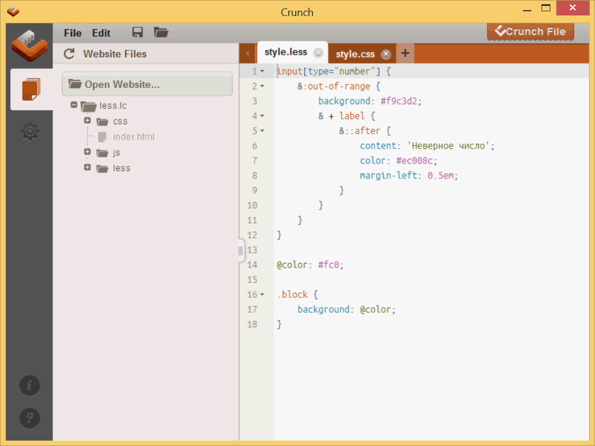
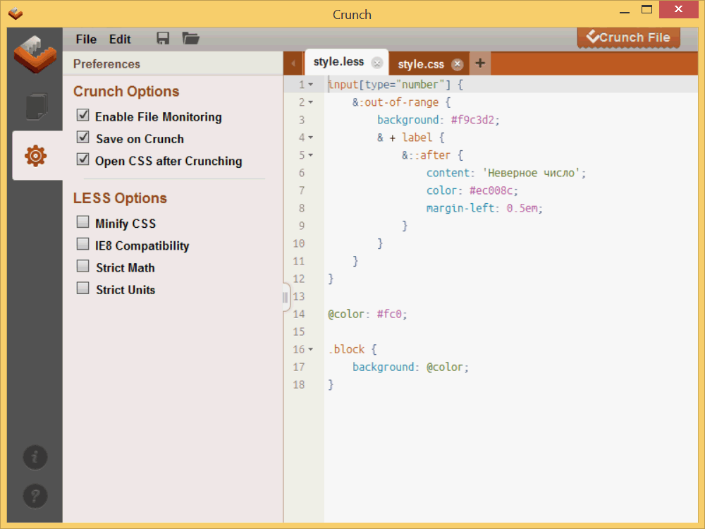

LESS
Учебник LESSПрограмма Crunch
Crunch — простой редактор и компилятор Less сделанный на Adobe Air, за счёт чего работает в любых операционных системах.
В редакторе имеется подсветка синтаксиса, возможность работать одновременно с несколькими файлами и группирование блоков.
Скачать программу можно на официальном сайте по этой ссылке.
http://crunchapp.net
В программе доступны две вкладки.
Для начала работы следует открыть папку содержащую Less-файлы через кнопку Open Website...
Как правило, исходные документы хранятся в папке с именем "less", а уже скомпилированные стилевые файлы — в папке "css".
Самому создавать эту папку не требуется, она будет сделана автоматически при компиляции.
Структура открытых файлов сохраняется и после закрытия и повторного запуска Crunch, что довольно удобно при работе с одним проектом.
Следующая вкладка Preferences содержит настройки программы и компилятора Less.
Все настройки делятся на два блока — настройки самой программы и настройки Less, которые влияют на получаемый результат.
Enable File Monitoring. Идёт отслеживание открытых во вкладках файлов и при их изменении внешней программой Crunch сообщит об этом.
Save on Crunch. Открытый файл сохраняется при компиляции.
Open CSS after Crunching. Вновь созданный стилевой файл открывается в новой вкладке для редактирования.
Minify CSS. Выходной файл сохраняется без пробелов в виде единой строки.
IE8 Compatibility. Режим совместимости с браузером Internet Explorer 8.
В большинстве случаев не оказывает какое-либо влияние на результат.
Strict Math. При включении этого пункта математические выражения не вычисляются, а записываются в исходном виде.
Например, 10px + 10px останется исходным, а никак не значением 20px полученным в результате сложения.
Strict Units. При выборе этого пункта операции с разными единицами измерения приводят к ошибке.
Если галочку убрать, то можно проценты соединять с пикселями, но в этом случае считается, что это одни и те же единицы.
Выражение 10px + 10% даёт 20px, поскольку за основу берётся первая единица, т.е. пиксели, и проценты заменяются на них.
Сама компиляция происходит при нажатии на кнопку "Crunch File" в правом верхнем углу окна.
Если включена опция "Open CSS after Crunching", то в новой вкладке откроется скомпилированный CSS.
Или документ обновится, если вкладка уже открыта.